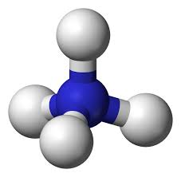
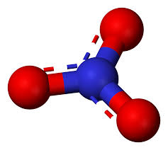

Interactive Pond — Working Demo
Rotate the scene. Hover to highlight regions. Click to show info.
Click parts to read about nitrate leaching and algal blooms.
Water
Soil
Algae
 Bacteria
Bacteria

Ammonium

Nitrate